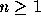
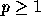
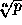
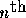
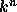
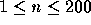
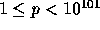
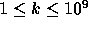
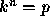

| Power of Cryptography |
Current work in cryptography involves (among other things) large prime numbers and computing powers of numbers modulo functions of these primes. Work in this area has resulted in the practical use of results from number theory and other branches of mathematics once considered to be of only theoretical interest.
This problem involves the efficient computation of integer roots of numbers.
Given an integer  and an integer  you are to write a program that determines  , the positive  root of p. In this problem, given such integers n and p, p will always be of the form  for an integer k (this integer is what your program must find).
The input consists of a sequence of integer pairs n and p with each integer on a line by itself. For all such pairs  ,  and there exists an integer k,  such that  .
For each integer pair n and p the value should be printed, i.e., the number k such that .
2 16 3 27 7 4357186184021382204544
4 3 1234